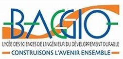

Formation ▼
-
• BUT2 TI (Technologie de l'Information),
de oct. 2023 à juil. 2024
Université Sorbonne Paris Nord, Villetaneuse

Actuellement en BUT PASSERELLE (Informatique + Science des Données)
-
• Licence Mathématiques,
de sept. 2019 à juil. 2023
Université Sorbonne Paris Nord, Villetaneuse
Obtention du DEUG Mathématiques et Application en juillet 2022
-
• Licence Informatique,
de déc. 2014 à juil. 2019
Université Paris Descartes, Paris
Obtention du DEUG informatique en juillet 2019
- • Classe préparatoire MPSI, de sept. 2014 à déc. 2014
Lycée Voltaire, Paris
- • Baccalauréat Scientifique (spécialité mathématiques), juil. 2014
Lycée Baggio, Lille

- • Apprentissage de la langue Française, de sept. 2010 à juin 2011
Lycée Gaston Berger, Lille
Obtention du diplôme du DELF A2 en juin 2011
Projets universitaires ▼
- SAE (Situation d'Apprentissage et d'Évaluation), de janvier 2024 à mars 2024
IUT Villetaneuse
Analyse collaborative des données Parcoursup
• Travail en binôme
• Objectif : faciliter les décisions d'admission
Acquis : compétences en analyse de données, prise de décision stratégique

- Séminaire (Projet d'algèbre), de septembre 2022 à novembre 2022
Université Sorbonne Paris Nord
Étude de la structure et classification des algèbres de Lie simples
• Exposé de 75 minutes en binôme
• Développement des notions de base
• Résolution des exercices et présentation des solutions
Acquis : compétences en présentation, en résolution de problème
- Agenda en ligne (Projet de programmation), de janvier 2019 à mai 2019
Université Paris Descartes
Développement d'une application similaire à Google Agenda
• Travail en groupe de 4 personnes
• Gestion des inscriptions et sécurité
• Création, annulation, modification des rendez-vous
Acquis : compétences en programmation et en gestion de projet
Stage ▼
- Assistante d'éducation en mathématiques, de mars 2023 à juin 2023
Lycée Polyvalent de Cachan, Cachan
• Observation des cours au lycée
• Réponse aux questions des lycéens
• Animation d'une séance pédagogique
Acquis : sens de l'écoute, pédagogie, créativité, adaptation
Expérience professionnelle ▼
- Serveuse (weekend), de septembre 2013 à janvier 2014
Le Phoenix, Roncq
• Préparation de salle
• Accueil client
• Prise des commandes
• Encaissement
Acquis : travail en équipe, communication, rigueur, rapidité